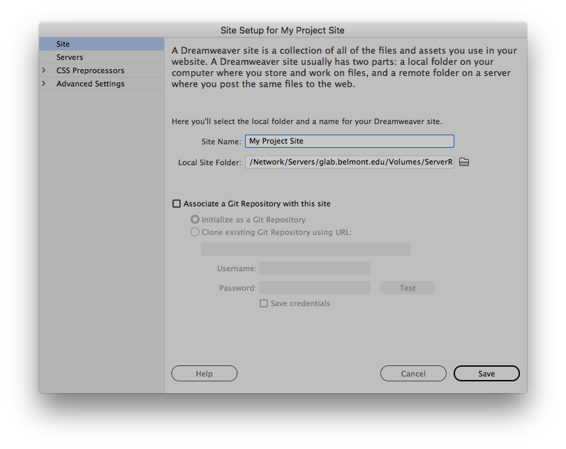

The Site Setup Dialog
The Manage Sites dialog box is your gateway into various Dreamweaver site functions. From this dialog box,
you can initiate the process for creating a new site, editing an existing site, duplicating a site,
removing a site, or importing or exporting a site’s settings.
To set up and manage a site, use the Site > New Site, or Site > Manage Sites dialogs.
Click the New Site button to create a new Dreamweaver site.
Then specify the name and location for your new site in the Site Setup dialog box.
Site Settings
In the Site Name text box, enter a name for your site.
This name appears in the Files panel and in the Manage Sites dialog box; it does not appear in the browser.
In the Local Site Folder text box, specify the folder you identified earlier—
the folder on your computer where you want to store the local version of your site files.
Click the folder icon to the right of the text box to browse to the folder.
This folder location is where you keep the working copies of web pages on your local computer.
Click save.
Best practices for naming files and folders
Follow these general guidelines for naming files and folders:
- File and folder names in websites should never contain spaces or any of the following characters: /\?%*:|">.
- Although other special characters are permitted, it is better to confine yourself to alphanumeric characters, hyphens, and underscores
- Most file and folder names end up as part of a web page's URL, so keep them short, but meaningful. Long URLs are difficult for users to remember and type into browsers on a mobile device.
- Stick to lowercase letters for file and folder names to avoid file not found issues. Most web servers are Linux –based, which are case-sensitive.
